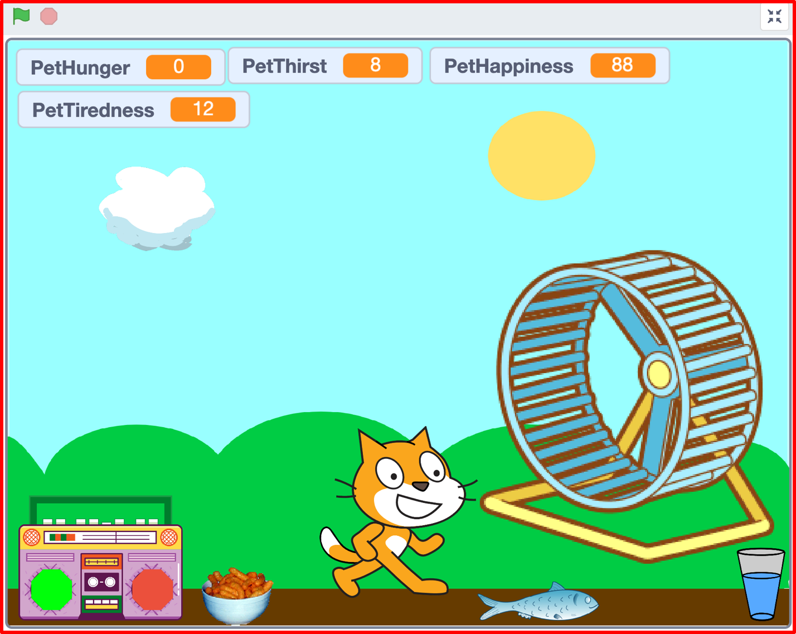
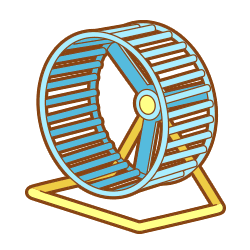
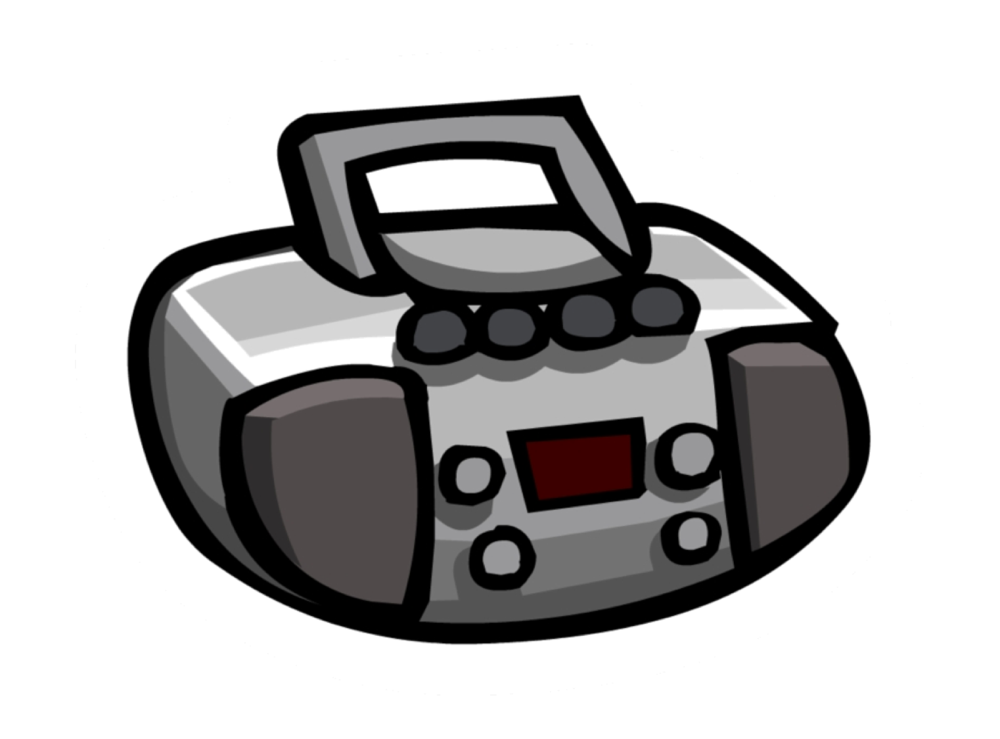
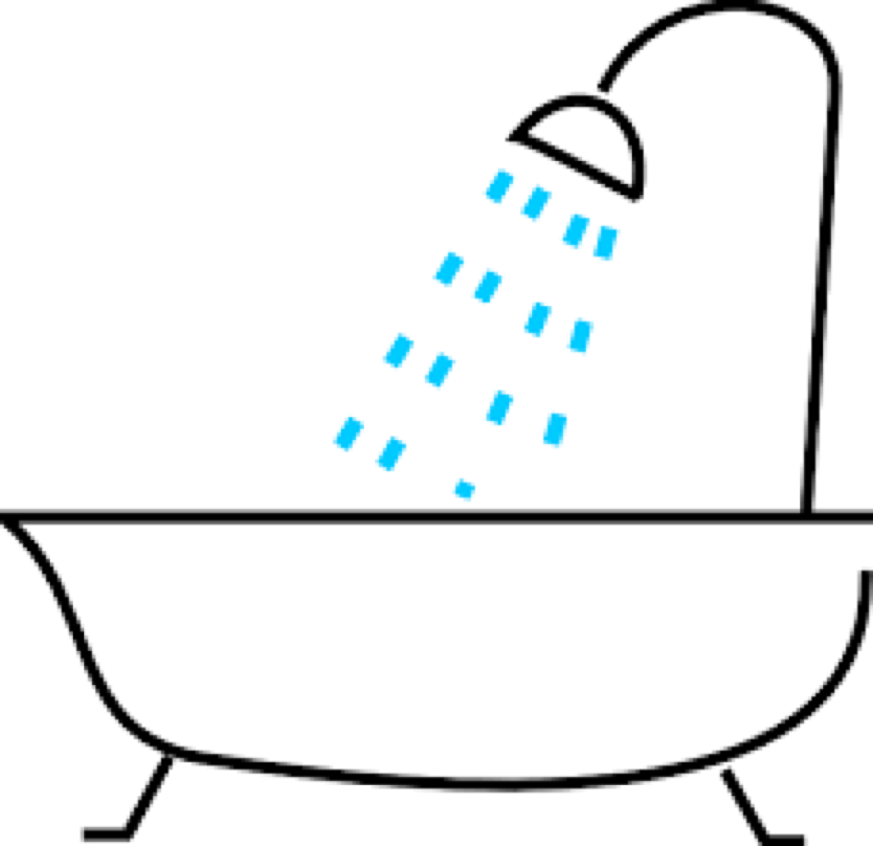

A Virtual LOLcat in Scratch
Table of Contents
Grey overlay
Pink
Green
Blue
Cream
Liliac
Purple
Yellow
1 Objectives
Developing Programming and Development, Algorithms, Literacy, Information Technology Learning Strands:
- Develop understanding of structured programming.
- Be to able to declare and assign variables and lists.
- Be able to use conditional statements.
- Be able to use arithmetic operators and loops.
- Be able to import sprites and images to customise your virtual pet.
- Use correct grammar, punctuation and spelling of keywords throughout this project.
- Use a variety of software to manipulate and present digital content.
2 Customising your Virtual Pet
Badge It

- To earn your last badge, you need to customise your pet.
- The time you have to do this will depend on how quickly you finished the other lessons.
- Customise your script to make it your own project. You can add anything that you like, but some ideas might be to:
- PetFitness - If your Pet doesn't exercise it can grow fatter, maybe it performs a little animation when you tell it to exercise.
- PetToilet - Maybe your pet becomes stinky if it doesn't go to the toilet.
- PetCleaniness - Make your pet take a shower or bath when he becomes dirty.
- Pet Behaviour - Maybe your pet runs about the screen, or starts messing with other sprites and you have to punish your pet to make it behave.
- Music - Add a BoomBox that when it plays music your pet starts to dance.
- Background - Change the background, add items of scenary or other sprites that can interact with your pet.
- The quality and complexity of your customisation will determine which colour badge your teacher awards you.
- Here are some sprites that you could use:
  